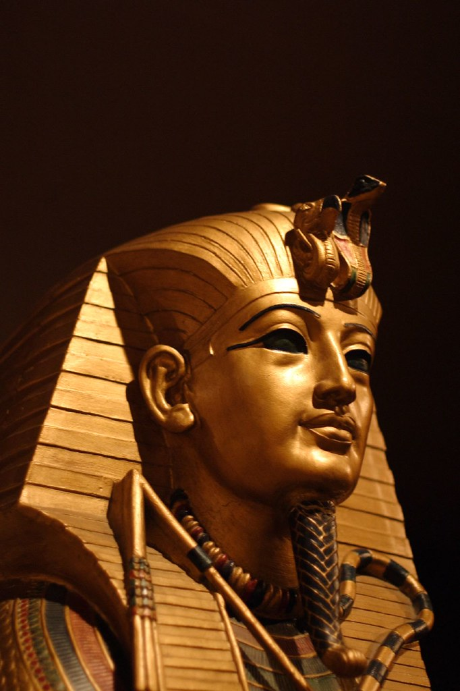
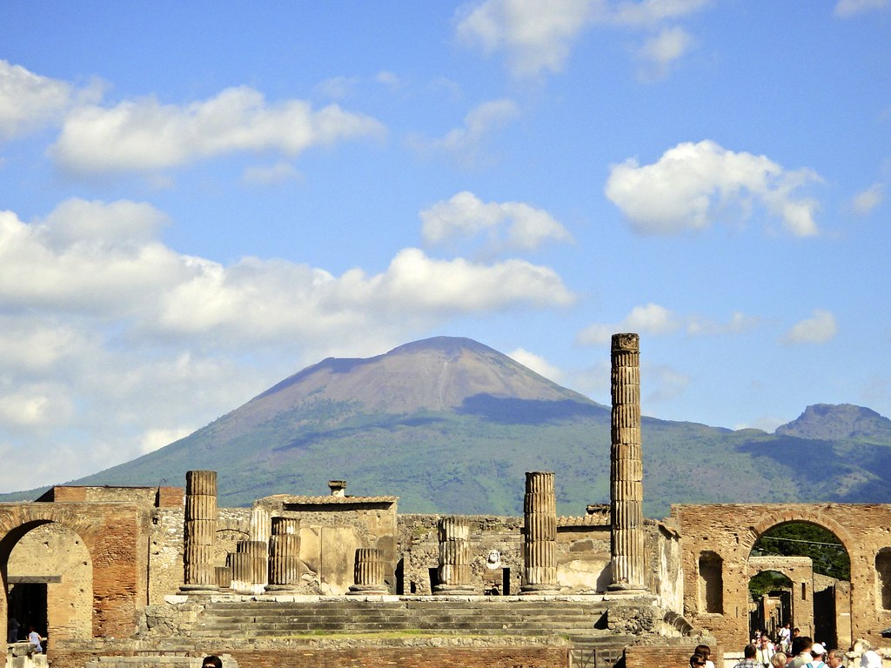
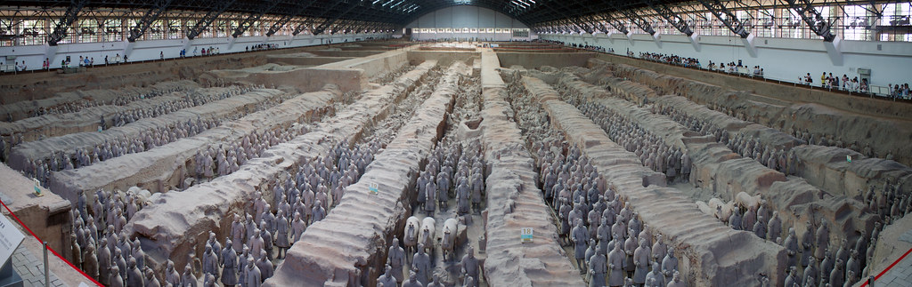
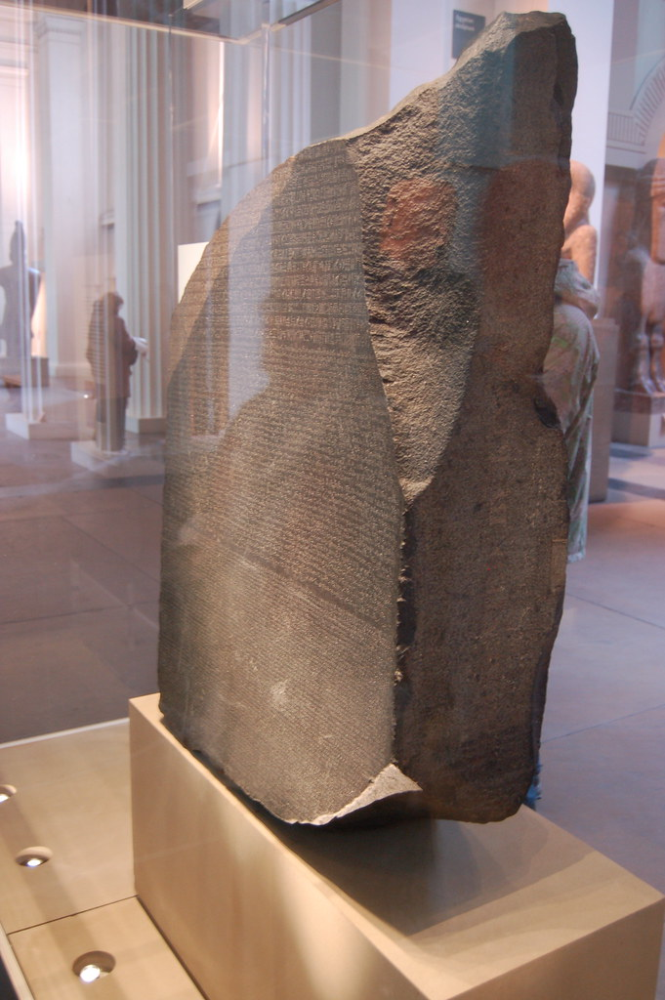
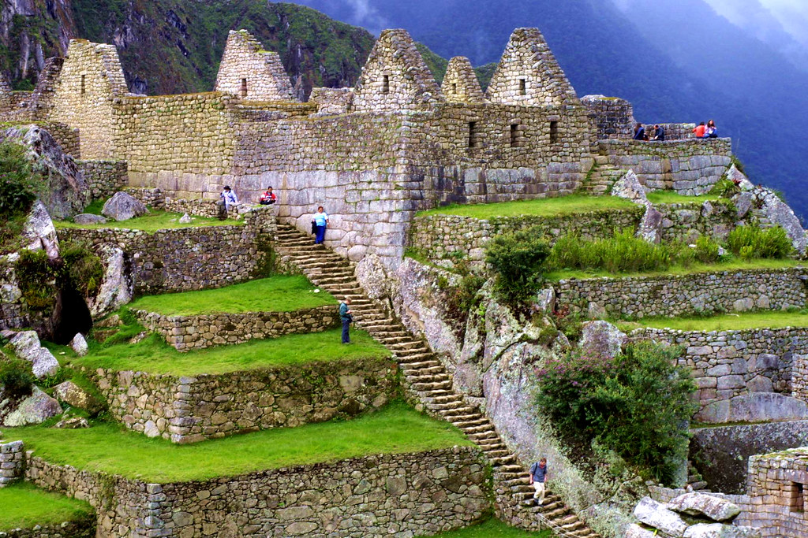

Famous archeological discoveries
1.Tutankhamun’s tomb by howard Carter

"King Tut" by Sanandreas CC-BY-NC-SA
2.Pompeii by Domenico Fontana

"Pompeii" by Mark Vuaran CC-BY
3.terracotta Warriors by local farmers in 1974

"Terracotta Soldier Panorama" by Walter-Wilhelm is licensed under CC BY 2.0
4.Rosetta stone by the soldiers of napoleon Bonaparte's army

"Rosetta Stone at the British Museum" by Chris Devors CC-BY-NC-ND
5.Machu Picchu by hiram Bingham

"Machu Pichu contrsucciones" by Trtoalfredo CC-BY-NC-SA
These are just some of many famous archeological discoveries and because of archeologists we now know where these discoveries are, when they were first established, and what early humans did during their time periods.This shows that archeology is very important because if for example someone never found the rosetta stone we wouldn't know much about egyptian history.